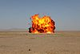

explosion

Definition: An explosion is a rapid expansion in volume of a given amount of matter associated with an extreme outward release of energy, usually with the generation of high temperatures and release of high-pressure gases. Explosions may also be generated by a slower expansion that would normally not be forceful, but is not allowed to expand, so that when whatever is containing the expansion is broken by the pressure that builds as the matter inside tries to expand, the matter expands forcefully. An example of this is a volcanic eruption created by the expansion of magma in a magma chamber as it rises to the surface. Supersonic explosions created by high explosives are known as detonations and travel through shock waves. Subsonic explosions are created by low explosives through a slower combustion process known as deflagration.
Source: Wikipedia
Wikipedia Page (Something wrong with this association? Let us know.)
Wikidata Page (Something wrong with this association? Let us know.)